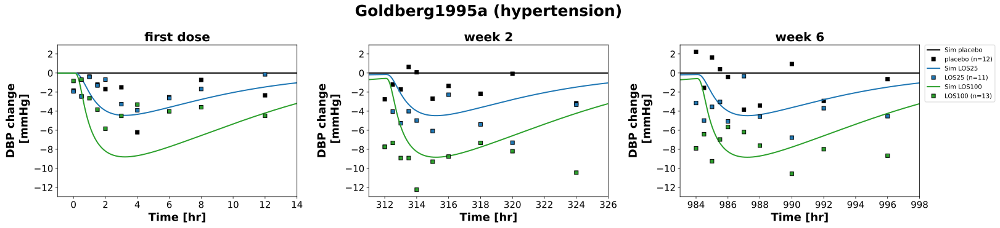
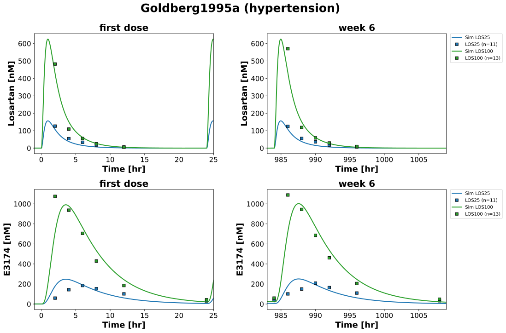
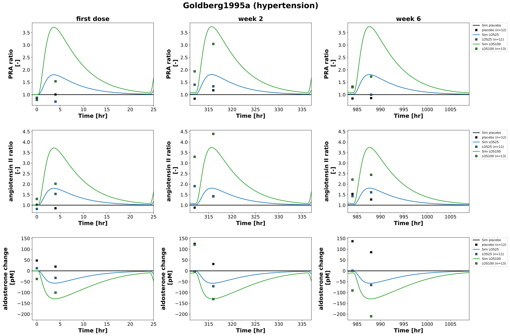

Overview
Models
| model | source |
|---|---|
| model | losartan_body_flat.xml |
Datasets
Figures (3)






Code
"""Simulation experiment of the study Goldberg1995a."""
from typing import ClassVar, override
from pkpdsim.metadata import (
ApplicationForm,
Coadministration,
DataType,
Dosing,
Fasting,
Health,
PKPDData,
PKPDMappingMetaData,
Route,
Tissue,
)
from sbmlsim import Q
from sbmlsim.data import DataSet
from sbmlsim.fit import FitData, FitMapping
from sbmlsim.plot import Axis, Figure
from sbmlsim.simulation import Change, Simulation
from pkdb_models.models.losartan import MODEL
from pkdb_models.models.losartan.experiments.base_experiment import (
LosartanSimulationExperiment,
)
class Goldberg1995a(LosartanSimulationExperiment):
"""Simulation experiment of Goldberg1995a.
Placebo or losartan potassium 25 mg or 100 mg as tablet once daily for six
weeks (42 doses) after a placebo run-in in patients with mild to moderate
essential hypertension; four inpatient days (run-in, first dose, week 2,
week 6), fasted and supine from midnight to 1.5 hr after the dose. The
data are the published quantities relative to the run-in day at the same
time after the dose: the change of the supine diastolic blood pressure,
the ratio of the plasma renin activity (PRA, `ren_ratio`, the PRA is
proportional to renin at a constant angiotensinogen) and of angiotensin II
and the change of aldosterone; and losartan (Merck HPLC assay, as the
potassium salt) and E3174 in plasma after the first dose and in week 6. The
baselines of angiotensin II and aldosterone are the run-in values of each
arm. The arm with enalapril 20 mg is not simulated (no ACE inhibition in
the model). The placebo arm is flat in the model.
"""
info: ClassVar[dict[str, str]] = {
"[Cveplasma_los]": "losartan",
"[Cveplasma_e3174]": "exp3174",
"ren_ratio": "ratio_pra",
"ang2_ratio": "ang2_ratio",
"ald_change": "ald_change",
"DBP_change": "dbp_change",
}
colors: ClassVar[dict[str, str]] = {
"placebo": "black",
"LOS25": "tab:blue",
"LOS100": "tab:green",
}
losp_doses: ClassVar[dict[str, int]] = {
"placebo": 0, # [mg]
"LOS25": 25, # [mg]
"LOS100": 100, # [mg]
}
interventions: ClassVar[list[str]] = list(losp_doses.keys())
#: the mean of the run-in values at 0 hr and 4 hr of each arm
ang2_runin: ClassVar[dict[str, float]] = {
"placebo": 2.86, # [pg/ml]
"LOS25": 2.32, # [pg/ml]
"LOS100": 2.25, # [pg/ml]
}
ald_runin: ClassVar[dict[str, float]] = {
"placebo": 10.1, # [ng/dl]
"LOS25": 11.5, # [ng/dl]
"LOS100": 13.1, # [ng/dl]
}
#: the run-in supine DBP of the 100 mg group at 0 hr (100.2 mmHg, legend of
#: Fig2), the groups did not differ
dbp_runin = 100.2 # [mmHg]
#: the visits (first dose, week 2, week 6) by the time of their dose
visits: ClassVar[dict[str, int]] = {
"first dose": 0, # [hr]
"week 2": 13 * 24, # [hr]
"week 6": 41 * 24, # [hr]
}
n_doses = 42
@override
def datasets(self) -> dict[str, DataSet]:
dsets = {}
for fig_id in ["Fig2", "Fig3", "Fig4", "Fig5", "Fig6"]:
df = self.load_dataframe(fig_id)
for label, df_label in df.groupby("label"):
label = str(label)
if label.endswith("_renin"):
# PRA x 7.6, not a measurement of renin
continue
dset = DataSet.from_df(df_label, self.ureg)
# unit conversion to mole/l
if label.endswith("_ang2"):
dset.unit_conversion("mean", 1 / self.Mr.ang2)
elif label.endswith(("_ald", "_ald_change")):
dset.unit_conversion("mean", 1 / self.Mr.ald)
elif label.endswith("_losartan"):
dset.unit_conversion("mean", 1 / self.Mr.losp)
elif label.endswith("_exp3174"):
dset.unit_conversion("mean", 1 / self.Mr.e3174)
dsets[label] = dset
return dsets
@override
def simulations(self) -> dict[str, Simulation]:
simulations = {}
end = (self.n_doses + 1) * 24 + 1 # [hr]
for intervention in self.interventions:
dose = self.losartan_dose(Q(self.losp_doses[intervention], "mg"))
# the run-in for 24 hr, a dose every 24 hr for 42 days from 0 hr
simulations[f"po_{intervention}"] = Simulation(
time_unit="hr",
end=end,
preinit_changes={
**self.default_changes(),
"ang2_ref": Q(self.ang2_runin[intervention], "pg/ml")
/ self.Mr.ang2,
"ald_ref": Q(self.ald_runin[intervention], "ng/dl") / self.Mr.ald,
"DBP_ref": Q(self.dbp_runin, "mmHg"),
},
changes=[
Change(24, {"PODOSE_los": dose}),
self.add_doses(
[24 * k for k in range(2, self.n_doses + 1)],
{"PODOSE_los": dose},
),
],
time_shift=-24,
)
return simulations
@override
def fit_mappings(self) -> dict[str, FitMapping]:
mappings = {}
for sid, name in self.info.items():
pk = sid in {"[Cveplasma_los]", "[Cveplasma_e3174]"}
for intervention in self.interventions:
if intervention == "placebo" and pk:
continue
mappings[f"fm_po_{intervention}_{name}"] = FitMapping(
self,
reference=FitData(
self,
dataset=f"{intervention}_{name}",
xid="time",
yid="mean",
yid_sd=None,
count="count",
),
observable=FitData(
self,
task=f"task_po_{intervention}",
xid="time",
yid=sid,
),
metadata=PKPDMappingMetaData(
tissue=Tissue.NONE if sid == "DBP_change" else Tissue.PLASMA,
route=Route.PO,
application_form=ApplicationForm.TABLET,
dosing=Dosing.MULTIPLE,
health=Health.HYPERTENSION,
fasting=Fasting.FASTED,
coadministration=Coadministration.NONE,
data=PKPDData.PK if pk else PKPDData.PD,
data_type=DataType.MEAN,
),
)
return mappings
@override
def figures(self) -> dict[str, Figure]:
return {
**self.fig2(),
**self.fig3(),
**self.fig4_5_6(),
}
def fig2(self) -> dict[str, Figure]:
"""Figure of the change of the diastolic blood pressure (Fig2)."""
fig = Figure(
experiment=self,
sid="Fig2",
num_rows=1,
num_cols=3,
name=f"{self.__class__.__name__} (hypertension)",
settings={"legend_scope": "row"},
)
plots = fig.create_plots(
xaxis=Axis(self.label_time, unit=self.unit_time),
yaxis=Axis(self.labels["DBP_change"], unit=self.units["DBP_change"]),
legend=True,
)
for k, (visit, start) in enumerate(self.visits.items()):
plots[k].set_title(visit)
xaxis = plots[k].xaxis
if xaxis is not None: # set by create_plots
xaxis.min = start - 1
xaxis.max = start + 14
sid = "DBP_change"
name = self.info[sid]
for k in range(len(self.visits)):
for intervention in self.interventions:
# simulation
plots[k].add_data(
task=f"task_po_{intervention}",
xid="time",
yid=sid,
label=f"Sim {intervention}",
color=self.colors[intervention],
)
# data
plots[k].add_data(
dataset=f"{intervention}_{name}",
xid="time",
yid="mean",
yid_sd=None,
count="count",
label=f"{intervention}",
color=self.colors[intervention],
linestyle="",
)
return self.figures_by_sid(fig)
def fig3(self) -> dict[str, Figure]:
"""Figure of losartan and E3174 in plasma in week 0 and 6 (Fig3)."""
fig = Figure(
experiment=self,
sid="Fig3",
num_rows=2,
num_cols=2,
name=f"{self.__class__.__name__} (hypertension)",
settings={"legend_scope": "row"},
)
plots = fig.create_plots(
xaxis=Axis(self.label_time, unit=self.unit_time), legend=True
)
# first dose (losartan, E3174) and week 6 (losartan, E3174)
for k, visit in [
(0, "first dose"),
(2, "first dose"),
(1, "week 6"),
(3, "week 6"),
]:
start = self.visits[visit]
plots[k].set_title(visit)
xaxis = plots[k].xaxis
if xaxis is not None: # set by create_plots
xaxis.min = start - 1
xaxis.max = start + 25
plots[0].set_yaxis(self.label_los, unit=self.unit_los)
plots[1].set_yaxis(self.label_los, unit=self.unit_los)
plots[2].set_yaxis(self.label_e3174, unit=self.unit_e3174)
plots[3].set_yaxis(self.label_e3174, unit=self.unit_e3174)
for k in range(4):
sid = "[Cveplasma_los]" if k < 2 else "[Cveplasma_e3174]"
name = self.info[sid]
for intervention in self.interventions:
if intervention == "placebo":
continue
# simulation
plots[k].add_data(
task=f"task_po_{intervention}",
xid="time",
yid=sid,
label=f"Sim {intervention}",
color=self.colors[intervention],
)
# data
plots[k].add_data(
dataset=f"{intervention}_{name}",
xid="time",
yid="mean",
yid_sd=None,
count="count",
label=f"{intervention}",
color=self.colors[intervention],
linestyle="",
)
return self.figures_by_sid(fig)
def fig4_5_6(self) -> dict[str, Figure]:
"""Figure of PRA, angiotensin II and aldosterone (Fig4, Fig5, Fig6).
Rows are the readouts, columns the visits.
"""
sids = ["ren_ratio", "ang2_ratio", "ald_change"]
fig = Figure(
experiment=self,
sid="Fig4_5_6",
num_rows=len(sids),
num_cols=len(self.visits),
name=f"{self.__class__.__name__} (hypertension)",
settings={"legend_scope": "row"},
)
plots = fig.create_plots(
xaxis=Axis(self.label_time, unit=self.unit_time), legend=True
)
ylabels = {
"ren_ratio": "PRA ratio\n",
"ang2_ratio": self.labels["ang2_ratio"],
"ald_change": self.labels["ald_change"],
}
for row, sid in enumerate(sids):
name = self.info[sid]
for col, (visit, start) in enumerate(self.visits.items()):
plot = plots[row * len(self.visits) + col]
plot.set_yaxis(ylabels[sid], unit=self.units[sid])
if row == 0:
plot.set_title(visit)
xaxis = plot.xaxis
if xaxis is not None: # set by create_plots
xaxis.min = start - 1
xaxis.max = start + 25
for intervention in self.interventions:
# simulation
plot.add_data(
task=f"task_po_{intervention}",
xid="time",
yid=sid,
label=f"Sim {intervention}",
color=self.colors[intervention],
)
# data
plot.add_data(
dataset=f"{intervention}_{name}",
xid="time",
yid="mean",
yid_sd=None,
count="count",
label=f"{intervention}",
color=self.colors[intervention],
linestyle="",
)
return self.figures_by_sid(fig)
if __name__ == "__main__":
MODEL.run_experiments(Goldberg1995a, output_dir=Goldberg1995a.__name__)